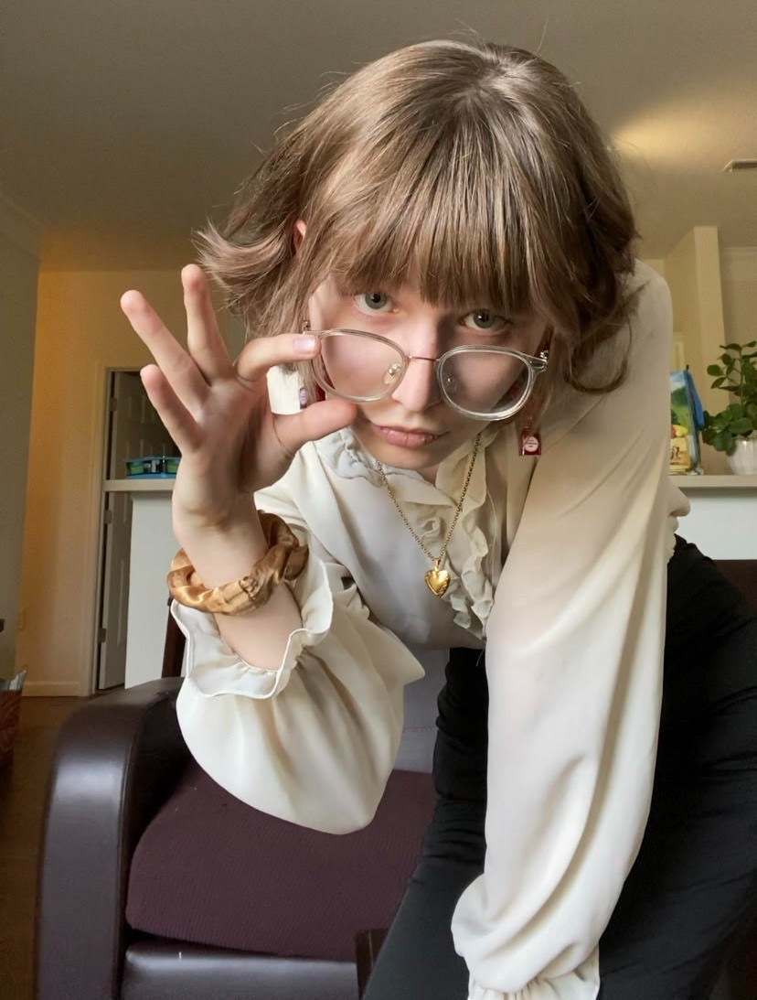
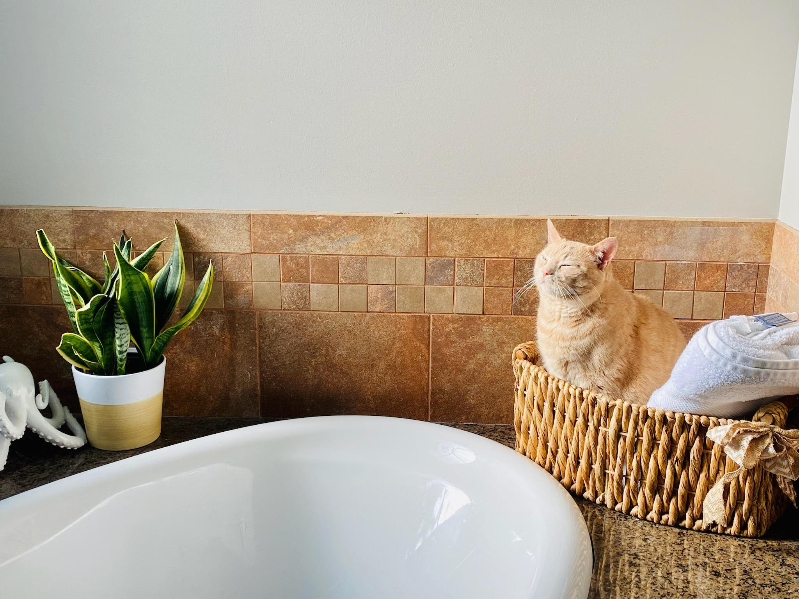

About Me
Hi, my name is Rosaline Flowers, and this is my personal website!
I've been working on it since June 2024; feel free to look around at my stuff.
In case you're curious, the lady on the right is me!
I grew up in Elizabethtown, Kentucky, but now live in Rochester, New York.

Education
I'm currently a third year at RIT studying Computer Science,
with a Minor in Creative Writing, and (hopefully) a Masters in Software Engineering.
I'm also the President of RIT's Wordsmiths, the resident writing club on campus, and formerly served in
the Student Government as Vice President of OUTspoken, a Representative Student Organization for queer
students.
Interests
I'm a big fan of writing, making stuff with computers, and my sweet little babies- Deboe and Sour Cream Pringle.
I've got a pretty wide variety of interests, so if you happen to be interested in Pokemon, FNAF, Homestuck,
Elden Ring, Origami Angel, or whatever else has my attention at the moment, please talk to me- I'm desperate!

Feel free to poke around at all the cool amenities,
and if you need to contact me, my info is below, in the footer.